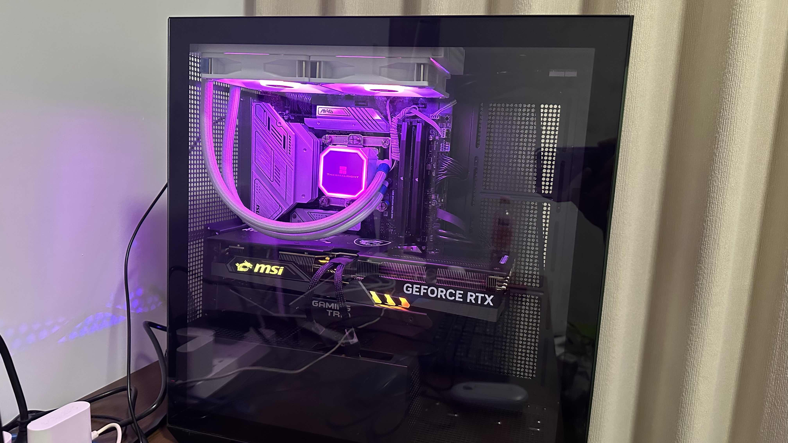

How to Build a Computer | Original

Video
Quick Take
- We want to make a computer to do machine learning. We buy the recent and affordable components until 2023 to build.
- We buy components like Intel Core i9-13900KF, MSI MAG B760M Mortar Motherboard and MSI Gaming GeForce RTX 4070 Graphics Card, etc.
- The computer couldn’t start up. We asked an expert for help two times. One is that the motherboard power supply connector is loose. The other reason is that the front panel start button connector is loose.
- We don’t need to buy vertical GPU brackets in our case. We should carefully analyze the reason instead of buying extra components for a quick solution.
- We should make cables place on the other side of the computer case. So the cables will not cover the motherboard and we can see it clearly.
- We should focus more on the compatibility between the components, especially between the motherboard, PC case, power supply and other components. They interact with other components a lot.
Principles
- Compare globally, like JD.com China, Rakuten Japan, Amazon USA
- Amazon has great tables to compare the products in the same series
- Find the best introduction to learn, check out negative comments
- Focus on two expensive items, CPU and GPU
- What is the biggest possible mistake of the buying decision?
- Go to the website of the manufacturer to check the details
- Check the compatibility of the items
- For the specifications of items, we will get familiar with them in the journey
- We can jump between the website and reference links to learn
- By working out a final plan, we can know more and figure out the critical questions
- Buy the best and latest products whose price you can afford.
Websites
- France, https://www.cdiscount.com
- Global, https://www.amazon.com
- Japan, https://www.rakuten.com
- China, https://jd.com
- South Korea, https://www.coupang.com
- Global, https://www.ebay.com
- Germany, https://www.otto.de
- North America, https://www.bestbuy.com
Start
This is what I found in the Chinese App Little Red Book.
- Graphics Card (GPU): MSI 3080 – 5219 CNY
- Motherboard + CPU: ASUS Z790-P + i7-13700KF – 4349 CNY
- Solid State Drive (SSD): Western Digital 1TB – 448 CNY
- Hard Disk Drive (HDD): Western Digital 2TB – 338 CNY
- RAM: Kingston 16GB*2 – 598 CNY
- Cooling System: Thermaltake 360 Liquid Cooling – 334 CNY
- Power Supply: Great Wall 85W – 603 CNY
- Case: Aigo – 264 CNY
- Mouse + Keyboard: 400 CNY
- Monitor: Dell U2723QX – 3600 CNY
- Total approximate cost: 16000 CNY
Learn and Compare
GPU
Amazon, GIGABYTE GeForce RTX 3060 Gaming OC 12G (REV2.0) Graphics Card, 3X WINDFORCE Fans, 12GB 192-bit GDDR6, GV-N3060GAMING OC-12GD Video Card
Amazon, MSI Gaming GeForce RTX 3080 LHR 10GB GDRR6X 320-Bit HDMI/DP Nvlink Torx Fan 4 RGB Ampere Architecture OC Graphics Card (RTX 3080 Gaming Z Trio 10G LHR) (Renewed)
Amazon, ASUS Dual GeForce RTX™ 4060 Ti OC Edition 8GB GDDR6 (PCIe 4.0, 8GB GDDR6, DLSS 3, HDMI 2.1, DisplayPort 1.4a, Axial-tech Fan Design, 0dB Technology, and More)
Amazon, MSI Gaming GeForce RTX 3080 LHR 12GB GDRR6X 384-Bit HDMI/DP Nvlink Torx Fan 3 Ampere Architecture OC Graphics Card (RTX 3080 Ventus 3X Plus 12G OC LHR)
Amazon, MSI Gaming GeForce RTX 4070 12GB GDRR6X 192-Bit HDMI/DP Nvlink TORX Fan 4.0 Ada Lovelace Architecture Graphics Card (RTX 4070 Ventus 3X 12G OC)
Amazon, MSI Gaming GeForce RTX 4070 12GB GDRR6X 192-Bit HDMI/DP Nvlink TORX Fan 4.0 Ada Lovelace Architecture Graphics Card (RTX 4070 Gaming X Trio 12G)
Motherboard
Amazon, ASUS ROG Strix B550-A Gaming AMD AM4 Zen 3 Ryzen 5000 & 3rd Gen Ryzen ATX Gaming Motherboard (PCIe 4.0, 2.5Gb LAN, BIOS Flashback, Dual M.2 with heatsinks, Addressable Gen 2 RGB Header and Aura Sync)
Amazon, MSI MAG B660 Tomahawk WiFi DDR4 Gaming Motherboard (ATX, 12th Gen Intel Core, LGA 1700 Socket, DDR4, PCIe 4, 2.5G LAN, M.2 Slots, Wi-Fi 6)
Amazon, MSI B760 Gaming Plus WiFi Gaming Motherboard (Supports 12th/13th Gen Intel Processors, LGA 1700, DDR5, PCIe 4.0, M.2, 2.5Gbps LAN, USB 3.2 Gen2, Wi-Fi 6E, ATX)
Amazon, MSI MAG B760M Mortar WiFi Gaming Motherboard (Supports 12th/13th Gen Intel Processors, LGA 1700, DDR5, PCIe 5.0, M.2, 2.5Gbps LAN, USB 3.2 Gen2, Wi-Fi 6E, mATX)
Amazon, ASUS TUF Gaming Z790-Plus WiFi LGA 1700(Intel®12th&13th Gen) ATX Gaming Motherboard(PCIe 5.0,DDR5,4xM.2 Slots,16+1 DrMOS,WiFi 6,2.5Gb LAN,Front USB 3.2 Gen 2 Type-C®,Thunderbolt 4(USB4),Aura RGB)
Amazon, ASUS Prime Z790-P WiFi LGA 1700(Intel® 13th &12th Gen) ATX Motherboard (PCIe 5.0,DDR5,14+1 Power Stages,3X M.2,WiFi 6,Bluetooth v5.2,2.5Gb LAN, Front Panel USB 3.2 Gen 2 Type-C®, Thunderbolt™ 4/USB4)
CPU
Amazon, Intel Core i7-13700KF (Latest Gen) Gaming Desktop Processor 16 cores (8 P-cores + 8 E-cores) - Unlocked,
Rakuten, Intel Core i7 13700KF BOX 第13世代インテルCore i7プロセッサー GPU非搭載 CPU
JD.com, 英特尔(Intel)酷睿 奔腾 CPU处理器 台式机 原盒 12代 i9-12900KF【16核24线程】, 3799 CNY
Amazon, Intel Core i9-13900KF (Latest Gen) Gaming Desktop Processor 24 cores (8 P-cores + 16 E-cores) - Unlocked
Solid State Drive
Amazon, Western Digital 1TB WD Blue SN570 NVMe Internal Solid State Drive SSD - Gen3 x4 PCIe 8Gb/s, M.2 2280, Up to 3,500 MB/s - WDS100T3B0C
JD, 三星（SAMSUNG）1TB SSD固态硬盘 M.2接口(NVMe协议PCIe 4.0 x4) 980 PRO （MZ-V8P1T0BW）
Rakuten, Western Digital 1TB WD グリーン 内蔵SSD ソリッドステートドライブ - SATA III 6Gb/s 2.5/7mm 最大545MB/s - WDS100T3G0A
Walmart, WD Blue 1TB SA510 SATA Internal Solid State Drive SSD - WDBB8H0010BNC-WRWN
Amazon, SAMSUNG 870 EVO SATA III SSD 1TB 2.5” Internal Solid State Drive, Upgrade PC or Laptop Memory and Storage for IT Pros, Creators, Everyday Users, MZ-77E1T0B/AM
Amazon, SAMSUNG 980 SSD 1TB PCle 3.0x4, NVMe M.2 2280, Internal Solid State Drive, Storage for PC, Laptops, Gaming and More, HMB Technology, Intelligent Turbowrite, Speeds of up-to 3,500MB/s, MZ-V8V1T0B/AM
Hard Disk Drive
Amazon, Seagate Portable 2TB External Hard Drive HDD — USB 3.0 for PC, Mac, PlayStation, & Xbox -1-Year Rescue Service (STGX2000400)
Amazon, WD 6TB My Book Desktop External Hard Drive, USB 3.0, External HDD with Password Protection and Auto Backup Software - WDBBGB0060HBK-NESN
Amazon, Seagate ST8000DM008 BarraCuda 8TB Internal Hard Drive HDD – 3.5 Inch Sata 6 Gb/s 5400 RPM 256MB Cache for Computer Desktop
JD.com, 西部数据 台式机机械硬盘 WD Blue 西数蓝盘 4TB 5400转 256MB SATA CMR
JD.com, 希捷(Seagate)台式机硬盘 2TB 7200转 256MB SATA 机械硬盘 希捷酷鱼BarraCuda系列(ST2000DM008)
RAM
Amazon, CORSAIR VENGEANCE DDR5 RAM 32GB (2x16GB) 5600MHz CL36 Intel XMP iCUE Compatible Computer Memory - Black (CMK32GX5M2B5600C36)
Amazon, Corsair VENGEANCE LPX DDR4 RAM 32GB (2x16GB) 3200MHz CL16 Intel XMP 2.0 Computer Memory - Black (CMK32GX4M2E3200C16)
Amazon, Samsung 16GB DDR4 3200MHz SODIMM PC4-25600 CL22 2Rx8 1.2V 260-Pin SO-DIMM Laptop Notebook RAM Memory Module M471A2K43DB1-CWE
Amazon, CORSAIR Vengeance DDR5 RAM 64GB (2x32GB) 6000MHz CL30 AMD Expo iCUE Compatible Computer Memory - Gray (CMK64GX5M2B6000Z30)
JD.com, 美商海盗船（USCORSAIR） 64GB(32G×2)套装 DDR5 6000 台式机内存条 复仇者系列 游戏型 黑色
Computer Cooler
Amazon, ID-COOLING FROSTFLOW X 240 CPU Water Cooler AIO Cooler 240mm CPU Liquid Cooler White LED 2x120mm PWM Fans, Intel 1700/1200/115X, AMD AM5/AM4
Amazon, Thermalright Frozen Prism 240 Black ARGB Liquid CPU Water Cooler with 120mm ARGB PWM Fan,240 Black Cold Row Specification, Computer Water Cooler for AMD/AM4/AM5
Amazon, Thermalright Frozen Magic 240 Scenic V2 Water Cooling CPU Cooler, 240 White Cooling Row Specification, 2×120mm PWM Fan, S-FDB V2.0 Bearing, Suitable for AMD/AM4/AM5, Intel 1700/1150/1151/1200 /2066
JD.com, 大水牛（BUBALUS）Q6 CPU散热器（支持AMD/多平台/9CM蓝光风扇/附带硅脂/台式电脑风冷散热器）
JD.com, Thermalright Frozen Prism 240
Computer Power Supply
Amazon, Thermaltake SMART 600W ATX 12V V2.3/EPS 12V 80 Plus Certified Active PFC Power Supply PS-SPD-0600NPCWUS-W
Amazon, Thermaltake Toughpower GX1 RGB 600W Gold SLI/Crossfire Ready Continuous Power RGB LED ATX12V v2.4 / EPS v2.92 80 Plus Gold Certified 5 Year Warranty Non Modular Power Supply PS-TPD-0600NHFAGU-1
Amazon, Thermaltake Toughpower GF1 650W 80+ Gold SLI/ CrossFire Ready Ultra Quiet 140mm Hydraulic Bearing Smart Zero Fan Full Modular Power Supply 10 Year Warranty PS-TPD-0650FNFAGU-1
Amazon, Corsair CX750F RGB, 750 Watt, 80 PLUS Bronze, Fully Modular RGB White Power Supply
JD.com, Corsair CX650F RGB, 750 Watt, 80 PLUS, Fully Modular RGB White Power Supply
PC case
Amazon, SZSKYING Gaming PC Case with 10PCS Fans ARGB, Computer Tower Case Airflow 3.0 USB, Tempered Glass Panel Control Remote Black.
JD.com, Aigo Yogo M2
JD.com, Aigo Yueguangbaohe Jing Mini
Reference
Learn about the different Intel Cores.
Ask ChatGPT:
What is the difference between P-cores and E-cores in Intel CPU?
What’s the difference between i9 and i7?
If I want to do machine learning, which I should buy, the i7 or i9?
i9 13900
https://cpu.userbenchmark.com/Compare/Intel-Core-i9-13900-vs-Intel-Core-i9-13900F/m1977296vsm1994287
What does F mean in Intel processor?
If your Intel® Core™ Desktop Processor includes the letter F in the product line suffix, then you need to use a discrete graphics card in your system. If the integrated graphics port is used instead, the processor will not boot.
Is Intel K or F better?
If your Intel processor has a K, that means that it is able to be overclocked and has been unlocked. F means that there is no iGPU or integrated graphics for the processor. KF series processors tend to be cheaper than K processors and usually have no iGPU.
https://versus.com/en/asus-prime-z790-p-d4-vs-msi-mag-b760m-mortar-max-wifi
Does the GPU GeForce RTXTM 4070 GAMING X TRIO 12G match the power supply Thermaltake Toughpower GF1 650W?
Learn the description of the product carefully, like this one.
ASUS TUF Gaming Z790-Plus WiFi LGA 1700.
- Intel LGA 1700 socket: Ready for 12th&13th Gen Intel Core processors, support PCIe 5.0, DDR5 and out-of-box Windows 11 ready
- Enhanced Power Solution: 16+1 DrMOS, ProCool sockets, military-grade TUF components, and Digi+ VRM for maximum durability and performance
- Comprehensive Cooling: VRM heatsink, PCH fanless heatsink, M.2 heatsink, hybrid fan headers and Fan Xpert 4 utility
- Ultra-Fast Gaming Networking: WiFi 6 AX201 (802.11 ax), Intel I225-V 2.5Gb LAN, TUF LANGuard and TurboLAN technology
- Fastest Connectivity: 4x M.2/NVMe SSD, Front panel USB 3.2 Gen 2 Type-C header, USB Gen 2x2 Type-C and Thunderbolt 4 (USB4)header
- PC DIY Friendly: SafeDIMM, PCIe 5.0 Safeslot, Q-LED, M.2 Q-Latch, Pre-mount I/O shield
- New TUF Gaming Aesthetics: New ID design, Synchronizable LED effects across a vast portfolio of compatible PC gear, including addressable RGB strips with Aura Sync
- Immersive Gaming Audio & AI Noise Cancellation: The Realtek S1200A codec offers pristine audio quality to draw you deeper into the game action or to enhance your favorite music tracks or videos. Communicate clearly with ASUS AI Noise Canceling Mic technology
https://timdettmers.com/2023/01/30/which-gpu-for-deep-learning/
https://timdettmers.com/2018/12/16/deep-learning-hardware-guide/
https://www.msi.com/Graphics-Card/GeForce-RTX-4070-GAMING-X-TRIO-12G/Specification
https://www.intel.com/content/www/us/en/products/sku/230497/intel-core-i913900kf-processor-36m-cache-up-to-5-80-ghz/specifications.html
https://www.msi.com/Motherboard/MAG-B760M-MORTAR-WIFI
https://www.thermaltake.com/toughpower-gf1-650w-tt-premium-edition.html
https://file.thermaltake.com/file/qig/Connect_PCIe_Cables_to_High_Power_Consumption_GPU_en.pdf, How to connect PCIe cables to high power consumption graphics cards properly?
https://www.whatpsu.com/psu/cpu/Intel-Core-i9-13900K/gpu/NVIDIA-GeForce-RTX-4070-Ti
https://pcpartpicker.com/forums/topic/359090-what-is-this-8-pin-connector-on-my-hard-drive, What is this 8 pin connector on my hard drive?
Final Selection
From JD.com.
CPU, Intel Core i9-13900KF (Latest Gen) Gaming Desktop Processor 24 cores (8 P-cores + 16 E-cores) - Unlocked, 4709 CNY
Motherboard, MSI MAG B760M Mortar WiFi Gaming Motherboard (Supports 12th/13th Gen Intel Processors, LGA 1700, DDR5, PCIe 5.0, M.2, 2.5Gbps LAN, USB 3.2 Gen2, Wi-Fi 6E, mATX), 1299 CNY
GPU, MSI Gaming GeForce RTX 4070 12GB GDRR6X 192-Bit HDMI/DP Nvlink TORX Fan 4.0 Ada Lovelace Architecture Graphics Card (RTX 4070 Gaming X Trio 12G), 5199 CNY
SSD, SAMSUNG 980 SSD 1TB PCle 3.0x4, NVMe M.2 2280, Internal Solid State Drive, Storage for PC, Laptops, Gaming and More, HMB Technology, Intelligent Turbowrite, Speeds of up-to 3,500MB/s, MZ-V8V1T0B/AM, 399 CNY
HDD, Western Digital 2TB WD Blue PC Internal Hard Drive - 7200 RPM Class, SATA 6 Gb/s, 256 MB Cache, 3.5” - WD20EZBX, 428 CNY
RAM, CCORSAIR Vengeance DDR5 RAM 64GB (2x32GB) 6000MHz CL30 AMD Expo iCUE Compatible Computer Memory - Gray (CMK64GX5M2B6000Z30), 1379 CNY
Cooler, Thermalright Frozen Prism 240 White ARGB AIO Water Cooler, Liquid CPU Cooler, 2×120mm PWM Fans Water Cooling System,1850RPM High Speed, Compatible with AMD/AM4/AM5 & Intel LGA1150/1151/1200/2011/1700, 413 CNY
Power Supply, Corsair CX650F RGB, 750 Watt, 80 PLUS, Fully Modular RGB White Power Supply, 398 CNY
PC Case, Aigo Yueguangbaohe Jing Mini, 299 CNY
Sata Cable, Cable Matters 3-Pack 90 Degree Right Angle SATA Cable 18 Inches (6.0 Gbps SATA III Cable, SATA Cable for SSD, SATA SSD Cable, SATA 3 Cables) Black, 19 CNY
Mouse, Keyboard, Monitor: I already have the extra ones in my house.
Total: around 14000 CNY
This is just my final decision considering what I know and my budget. Please do your research too.
Install Guide
http://intel.cn/ProcessorInstall
https://www.intel.cn/content/www/cn/zh/support/articles/000088402/processors.html
How to Set Up CORSAIR CX-F RGB Series Power Supplies
PC Build Tutorial (Full Version) - MSI
https://youtu.be/qCPIEYfN_hc THERMALRIGHT FROZEN PRISM CPU Cooler Installation Guide for intel LGA1700, AMD AM4 AM5
MSI® HOW-TO install front panel connectors (JFP1)
Where to connect PC case cables, power cables and more - computer wiring tips
Graphics card installation is really easy! Just four simple steps, specially prepared for Xiaobai
BIOS Info
CPU Info:

There are fan, memory and storage Info too.
Install Operating System
Ubuntu Offical Site
A Machine Learning Environment with Ubuntu and GPU acceleration in 5 steps
Create a bootable USB stick on macOS
https://ubuntu.com/tutorials/create-a-usb-stick-on-macos#4-install-and-run-etcher
Install Ubuntu desktop
https://ubuntu.com/tutorials/install-ubuntu-desktop
Reflection
We should make cables place on the other side of the computer case. So the cables will not cover the motherboard and we can see it clearly.
We should ask customer support for the products in advance to gain all useful information, like installation videos. They prefer to upload long videos on large video platforms instead of showing them on e-commerce platforms.
We ask an expert two times to check why our computer couldn’t start up. One is that the motherboard power supply connector is loose. The other reason is that the front panel start button connector is loose.
When we ask specialists to help us, we need to do it ourselves to learn. They should only guide us. Otherwise, we will easily forget and don’t know what to do when facing problems next time.
We don’t need to buy vertical GPU Brackets in our case, like this one. We should carefully analyze instead of buying extra components for a quick solution.
We should focus more on the compatibility between the components, especially between the motherboard, PC case, power supply and other components. They interact with other components a lot.
Update
I regret not opting for a larger graphics card, as 12 GB of VRAM has proven insufficient for my needs.